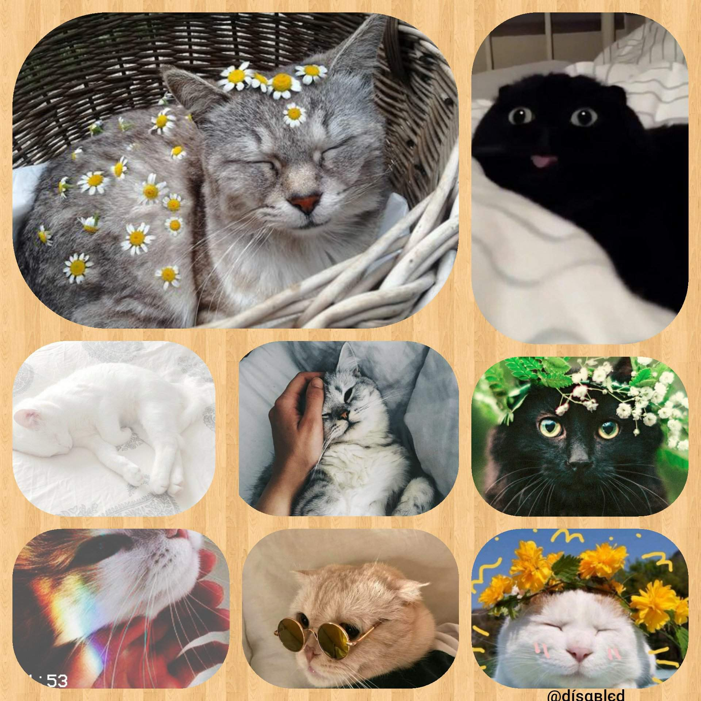

________________________________________
Great Reasons to get a cat:
- They are actually known for reducing anxiety and depression
- Owning a cat is actually better for the environment. Studies show that because cats eat less in general and are more likely to eat fish which have a low carbon footprint.
- Research shows that cat owners are more intelligent
- Cats are actually good for your heart because research shows they reduce stress.
- Cats actually bathe themselves, so they are very low-maintenance in consideration of how independant, yet loving they are.
- Cats are very quiet overall, which is good for everyone.
________________________________________